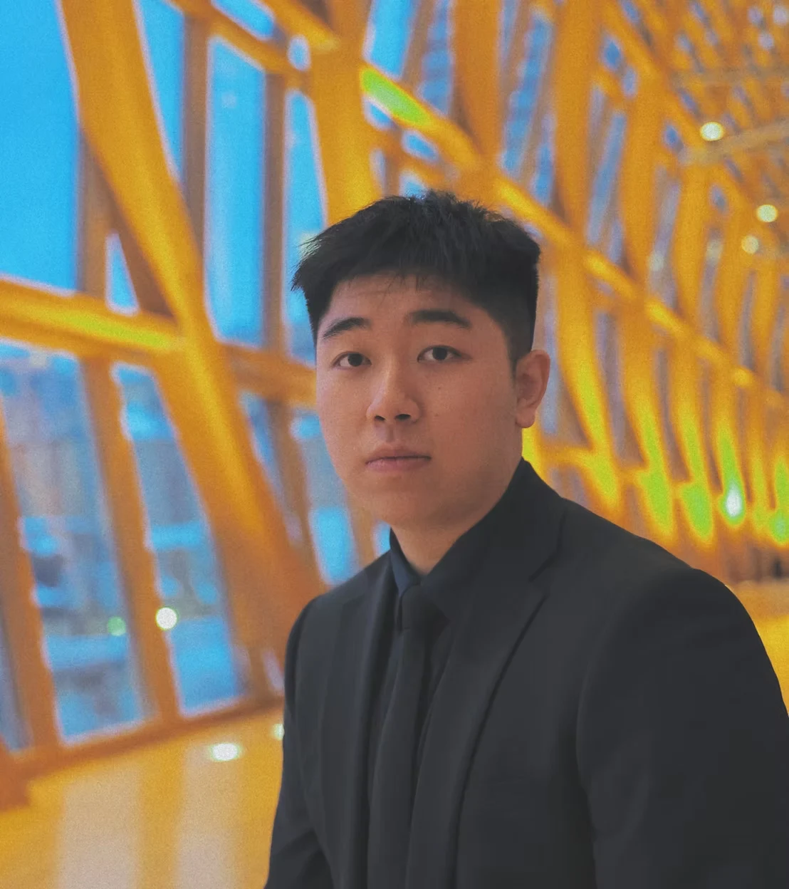

Oscar
Liang

Turning software logic into
physical possibility.
Building thoughtful systems that sense,
move, and make everyday life better.EXPLORE MY WORK
An idea is only
the beginning.
I’m Oscar, a third-year Engineering Science student at the University of Toronto, specializing in Robotics. My work lives where perception, code, and physical design meet.
Growing up in Shanghai, I was fascinated by the city’s skyline and subway network. Watching my grandfather repair a broken fan taught me something just as lasting: good engineering starts with observation, patience, and resourcefulness.
Today, that curiosity takes me from assistive robotic arms and autonomous tray delivery to sensor prototypes and the workshop. I care about how a system works—and how it helps the person using it.
View my résumé ↗Built to learn.
Designed to matter.
Robotics, research, and hands-on design.
Each project is a question made tangible.
THE THREAD THROUGH IT ALL
Understand the problem.
Build. Test. Refine.
In good
company.
Research, industry, and teams that
push me to think—and build—better.
MAY 2026 — PRESENTNYU Shanghai
Student Research Assistant
NYU Shanghai
Student Research Assistant
Developing an assistive manipulation pipeline for a wheelchair-mounted robotic arm. Fine-tuned and deployed a SmolVLA module to translate camera observations into actions for cup grasping and delivery.
Created system architecture diagrams and co-authored a research poster manuscript describing the language-to-action workflow.
ASSISTIVE ROBOTICS / VLA / SYSTEM ARCHITECTURESUMMERS 2025 & 2026HighGreat Technology
Project Intern
HighGreat Technology
Project Intern
Programmed keyframe trajectories and lighting choreography across Fylo, HULA, and EMO drone platforms for synchronized commercial performances with 2,000+ spectators per show.
Used 3D simulation environments to test and debug paths and anti-collision parameters before physical deployment.
DRONE SYSTEMS / SIMULATION / DEPLOYMENTJAN 2025 — PRESENTU of T Formula Racing
Deep Perception Member
U of T Formula Racing
Deep Perception Member
Worked with Python, PyTorch, TensorFlow, and Roboflow for vehicle data analysis, computer vision preprocessing, augmentation, and dataset management.
Manufactured carbon fibre and Kevlar aerodynamic components through wet layup and vacuum resin infusion, including mold preparation and tooling.
COMPUTER VISION / COMPOSITES / TEAM ENGINEERINGJAN 2025 — PRESENTBiomedical Engineering Club
Conference & Sponsorship Director · University of Toronto
Biomedical Engineering Club
Conference & Sponsorship Director · University of Toronto
Directed a conference for 200+ attendees with three tracks: Research, Industry, and Innovation.
Led outreach to 500+ potential sponsors and secured over $1,500 CAD in funding and equipment.
LEADERSHIP / EVENT DESIGN / PARTNERSHIPSJUN 2023 — SEP 2024York Region District School Board
International Student Ambassador
York Region District School Board
International Student Ambassador
Spoke at international student orientation panels for 800+ attendees, sharing practical insights to help new students navigate their transition.
Worked with the Canadian Asian Roots Collective to raise over $2,000 CAD and 475+ lb of donations for the Richmond Hill Food Bank.
PUBLIC SPEAKING / COMMUNITY / FUNDRAISINGEarlier chapters: Student Council Vice President, Tech Crew President, and founder of school Physics and Business Clubs. The starting point for a lasting interest in collaboration and technical communication.
University
of Toronto.
BASc in Engineering Science
Robotics Specialization · PEY
Artificial Intelligence minor
EV Design Certificate
Engineering Business Certificate
Along the way
2nd Place · Robotics TrackBattle of the Schools · BracketButler
Top 7 FinalistUTEK Programming Competition
International Scholar Award & ScholarshipUniversity of Toronto
From code
to components.
Software & AI
Python · C · MATLAB
SystemVerilog · PyTorch
TensorFlow · OpenCV
Roboflow · SmolVLA
Design & modeling
Fusion · AutoCAD · Onshape
PSpice · SketchUp
Technical drawings
Kinematic modeling
Hardware & testing
Oscilloscopes · Logic analyzers
Protocol analyzers
Function generators
Weekly course laboratory work
Making & working
Lathe · Mill · Drill press
Turning · Sawing · Cutting
Composite fabrication
Stakeholder communication
English · Mandarin · Shanghainese / Basic Cantonese
Let’s build
something real.
I’m looking for a 12–16 month internship or co-op in robotics, mechatronics, or engineering systems. Have a problem worth working on? Let’s talk.